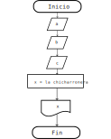

Programación secuencial
Table of Contents
Programar es como escribir un libro. Tiene un inicio, cosas interesantes y un final. Programar es todavía más poderoso, ya que existen palabras especiales que nos permitirán adelantar el capítulo, regresar al prólogo o parar de leer en ciertos momentos.
Cuando hablamos de la programación secuencial, nos referimos a programar y ejecutar linea por línea sin saltar absolutamente nada como hemos hecho los problemas anteriores.
1. Problema 1: Raices de una ecuación cuadrática
Realizar un programa que calcule las soluciones de una ecuación cuadrática de la forma \(ax^2 + bx + c = 0\)
Con tan solo leer el problema huele a chicharrones, por lo que utilizamos la fórmula para sacar las raíces de la ecuación con:
\begin{equation} x = \frac{-b \pm \sqrt{b^{2} - 4ac} }{ 2a} \end{equation}
Necesitamos entonces obtener los valores de a, b, c para poder
encontrar soluciones. El diagrama de flujo correspondiente secuencial
es como sigue:

Figure 1: Diagrama de flujo para encontrar las raíces de una ecuación cuadrática
Podemos ver que el programa sigue un solo camino, no hay bifurcaciones por lo que es secuencial. Cada algoritmo contiene partes secuenciales donde hacen operaciones fijas como fórmulas o funciones.
import java.util.Scanner; public class Problema1 { public static void main (String[] args){ Scanner input = new Scanner(System.in); int a; int b; int c; double solucionP; double solucionN; System.out.print("Ingrese el valor de a: "); a = input.nextInt(); System.out.print("Ingrese el valor de b: "); b = input.nextInt(); System.out.print("Ingrese el valor de c: "); c = input.nextInt(); input.close(); solucionP = (-b + Math.sqrt(Math.pow(b, 2) - 4*a*c))/ (2*a); solucionN = (-b - Math.sqrt(Math.pow(b, 2) - 4*a*c))/ (2*a); System.out.println("Soluciones:"); System.out.println("X_1: " + solucionP); System.out.println("X_2: " + solucionN); } }
Claramente si \(4ac > b^2\) nos mandará error, o si \(a = 0\) ocurre una indeterminacion, pero ignoremos por ahora los números imaginarios e indeterminaciones.
Algunas cosas nuevas es que podemos asociar operaciones aritméticas con paréntesis. También podemos utilizar la clase Math que contiene funciones matemáticas ya listas para usar como lo es la raíz cuadrada y potencia
Math.pow(a, b);
Tabla de pruebas
| a | b | c | resultado |
|---|---|---|---|
| 1 | 5 | 6 | -2, -3 |
| 1 | 1 | 1 | imaginario (NaN) |
| 1 | 2 | 1 | -1, -1 |
| 8 | 32 | 5 | -0.162882, -3.83711 |
2. Problemas
2.1. Problema 2: El mejor año de tu vida.
Dicen por ahí, que si sumas tu fecha de cumpleaños, obtendrás el mejor año de tu vida. Por ejemplo:
23/09/1998 \(\Rightarrow\) \(23 + 9 + 1998 = 2030\)
Crea un programa que reciba una fecha de nacimiento en dígitos y nos diga cuál es el mejor año esperado de ese cumpleaños.
2.2. Problema 3: Promedio edades
Crear un programa que reciba 5 edades de personas y nos regrese el promedio de esas edades.
2.3. Problema 4: Volumen esfera
Crear un programa que dado el radio de una esfera, calcule su volumen. La fórmula está dada por
\begin{equation} V = \frac{4}{3} \pi r^3 \end{equation}
Puedes usar el valor de PI como Math.PI, como si fuera una
constante.
2.4. Problema 5: Interés simple
Crear un programa que calcule el interés simple a partir de los parámetros:
- \(C_0\) corresponde a la cantidad inicial
- \(i\) corresponde a la tasa de interés anual
- \(n\) corresponde a el número de periodos o años
2.5. Problema 6: Interés compuesto
Crear un programa que calcule el interés compuesto a partir de los valores:
- \(C_0\) corresponde a la cantidad inicial
- \(i\) corresponde a la tasa de interés anual
- \(n\) corresponde a el número de periodos o años
2.6. Problema 7: Distancia entre 2 puntos
Crear un programa que dadas 2 coordenadas en el plano cartesiano \((x_1, y_1), (x_2, y_2)\) nos de la distancia que hay entre estos dos puntos